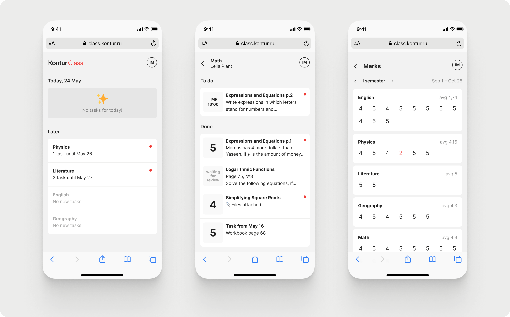

Class is a platform for students and teachers which provides communication during the remote educational process. Class was created for public schools in Russia that were forced to switch to the distant format because of COVID-19.
Public schools were not ready for distant format. Eventually, they got used to Zoom and other tools for video calls, but there was another huge problem: how to gather and review the homework from students.

Class solves this problem. Students get homework → do it on paper → take pictures and send them to a teacher → the teacher reviews it and gives a mark.
I built the UI from scratch. There is a mobile web interface for students:

Also, there is a desktop web interface for teachers. The first idea was to build a messenger where teachers could chat with students:

But, after studying the result of the research, I proposed a completely different idea for the teacher's UI. I convinced the team, and validated it through user testing.
I designed the UI where the teacher can manage all the tasks, and review homework by all students one by one without switching between chats:

The most significant part of the teacher's UI is a homework review:

Here the teacher can zoom photos:
And gives marks: